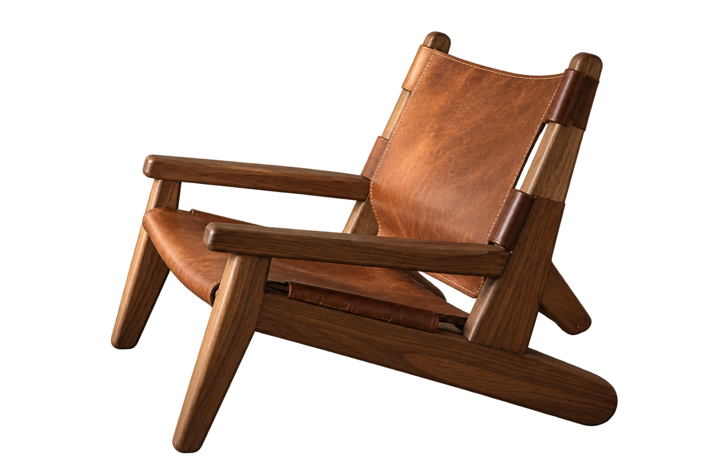
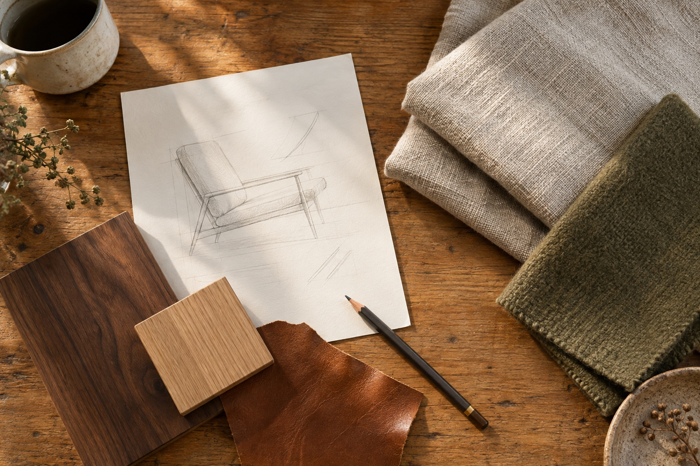

PATINA
A room,
considered.

Illustrative imagery — awaiting partner photography.
Furniture that earns its place.
The Living Studypatina.cloud
PATINA
A closer
look.

Illustrative imagery — awaiting partner photography.
The shape. The material. The feeling.
The Living Studypatina.cloud
PATINA
A designer’s
eye.

Illustrative imagery — awaiting partner photography.
Help shape a more personal way
to find what belongs.
The Living Studypatina.cloud
PATINA
The work
behind it.

Illustrative imagery — awaiting partner photography.
We’re building around craft over volume.
The Living Studypatina.cloud
PATINA
A place
at the table.
Help shape a designer-taught way to find furniture that belongs.
Join the Founding Circle
First access when the app launches.
patina.cloud/founding
Where Time Adds Value.